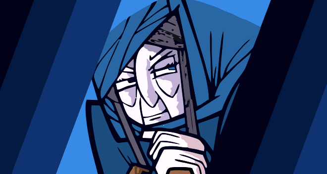

La Celestina
Trama
Calisto persiguiendo un halcón, entra en el jardín de una joven bella, Melibea, de la cual se enamora pero es rechazado inmediatamente. Uno de sus familiares, Sempronio, le introuduce a Celestina, una vieja hechicera, para que lo ayude en consiguir el amor de Melibea.Mientras Calisto se perdie en su pasión Sempronio, Pármeno y Celestina compiten para aprovecharse del loco perdido en amor.